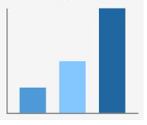
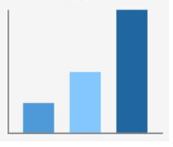

Overview
Purpose
The purpose of the website is to connect potential clients. More specifically, people who own their trucking companie, or work for one that are in need of Dispatch services.
By creating this website, the goal is to is to comunicate this potential clients that, we can save them time and ake them make more money with our service, and that, we will be the best option to hire a dispatch services company.
The Website will provide information, clients reviews, and the information they need to start working with us., tracking shipments, and communicating with drivers and customers. They may also be looking for ways to optimize their operations and increase efficiency, such as by reducing deadhead miles or improving load planning.
Audience
The audience for the web, would be primarily trucking companies that are in need of freight dispatch services. this would be small owner operator businesses to large fleets.
These trucking companies would likely be looking for a reliable and efficient way to manage their dispatch operations, including finding and booking loads
Another posible interested player on the website, would be freight brokers who are in need of of dispatch services to help them manage their logistics operations.
The target audience forthe website, would primarily be trucking companies in need of assistance managing their dispatch operations, as well as freight brokers in need of dispatch services to support their logistics operations.
Branding
Website Logo
Style Guide
Color Palette
Palette URL: https://coolors.co/396e94-e7c24f-a43312-381d2a-aabd8c| Primary | Secondary | Accent 1 | Accent 2 |
|---|---|---|---|
| [#000000] | [#003D71] | [#FCA311] | [#E5E5E5] |
Typography
Heading Font: Arial
Paragraph Font: Arial
Normal paragraph example
In Patagon Logistics Group we offer you a 24/7 dispatch service. We work hard, to keep your trucks and drivers working, with the best loads to move, for the best price in the market. Forget about 24/7 phone calls, filling up contracts and invoicing. We take care of your customer relationships by consistently communicating freight status and resolving any issues. We take care of your driver's timing, appointments and guide on the route to maximize the profitability of your company.
Colored paragraph example
In Patagon Logistics Group we offer you a 24/7 dispatch service. We work hard, to keep your trucks and drivers working, with the best loads to move, for the best price in the market. Forget about 24/7 phone calls, filling up contracts and invoicing. We take care of your customer relationships by consistently communicating freight status and resolving any issues. We take care of your driver's timing, appointments and guide on the route to maximize the profitability of your company.
Navigation
Site Map
Content
Home page
The purpose of the Home page is to give information about our services, and quickly offer contact, so we can close the sale by phone.
Images for the Home page
 

Contact
Here we provide options to contact us, by phone, or email or social meedia, or even just leaving their contact so we contact them later.
Images for the Contact Us page
>Set up
We will provide a form so they provide us with some necesary information from their company. Also the Option to upload files necesaries to work with them, such as Authority, w9, and certificate of insurance.
Images for the Set Up Page


Wireframes
Create three wireframes for your site. One for each page and list them here
Home
The Home page, has the goal of quickly conveying the core value proposition of the service while also offering clear and compelling calls-to-action to convert visitors into customers.
Contact Us
Here we provide options to contact us, by phone, or email or social meedia, or even just leaving their contact so we contact them later. Every Ico Button would be a Social media logo with a link, so Users can click and be redirected to that specific Social media. The picture will be one of the above pictures, and the text would let them know that we want them to contact us.
Set Up
We will provide a form so they provide us with some necesary information from their company. Also the Option to upload files necesaries to work with them, such as Authority, w9, and certificate of insurance. We will explain why we need each document, and what would be the benefit of seting up with us.